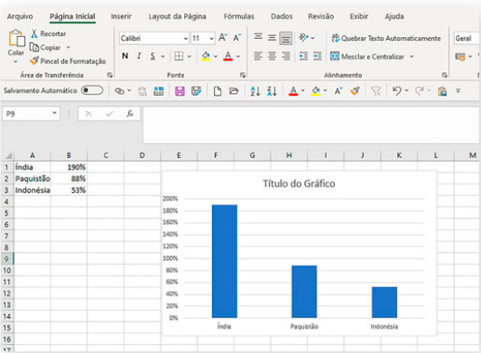

97
UNIDADE 3 - CAPÍTULO 4
CAPÍTULO 4 - Volume de sólidos geométricos
Vamos dividir um cubo em cubinhos, observe:
Podemos calcular o volume deste cubo conhecendo as suas medidas de comprimento, largura e altura. Sabendo que cada cubinho tem uma aresta medindo 1 cm, o volume de cada cubinho é igual a 1 cm³.

Logo, o volume do cubo é igual a V = 3 cm x 3 cm x 3 cm = 27 cm³.
Volume é a quantidade de espaço ocupado por um objeto. No Sistema Métrico Decimal, a unidade fundamental para medir volumes é o metro cúbico (m³).
Observe o sólido geométrico, a seguir:
1. Considerando cada cubinho uma unidade de medida e que este tem a medida da aresta igual a 1 cm, troque ideias com um colega e calculem o volume deste sólido geométrico.

2. Qual foi a estratégia utilizada por vocês para calcular o volume? Contem ao professor e aos colegas.
Para medir pequenos e grandes volumes usamos os múltiplos e submúltiplos do metro cúbico. Vamos relembrar?
98
UNIDADE 3 - CAPÍTULO 4
No quadro a seguir, temos indicado os múltiplos e submúltiplos em relação ao metro cúbico.
![Tabela com a representação dos múltiplos e submúltiplos em relação à unidade padrão: metro cúbico. O quadro especifica o nome da unidade, como é o seu símbolo e o valor em relação ao metro cúbico. As três unidades dos múltiplos são: Quilômetro cúbico, símbolo quilômetro ao cubo, valor em relação ao metro cúbico: 1.000.000.000 metro cúbico. Hectômetro cúbico, símbolo hm ao cubo, valor em relação ao metro cúbico: 1.000,000 metro cúbico. Decâmetro, símbolo dam ao cubo, Valor em relação ao metro cúbico: 1.000 metro cúbico. No centro do quadro, a unidade padrão metro cúbico, símbolo metro ao cubo, valor em relação ao metro cúbico: 1 metro cúbico. No quadro à direita, as três unidades dos submúltiplos do metro cúbico: Decímetro cúbico, símbolo dm ao cubo, valor em relação ao metro cúbico 0,001 metro cúbico. Centímetro cúbico, símbolo cm o cubo, valor em relação ao centímetro cúbico, 0,000001 metro cúbico. Milímetro cúbico, símbolo mm ao cubo, valor em relação ao metro cúbico, 0,000000001 metro cúbico.](../../resources/images/unidade3/capitulo4/imagem3.png)
Podemos estabelecer transformações entre as unidades de medida de volume fazendo multiplicações ou divisões sucessivas por 1000.
ENCONTRE SOLUÇÕES
1. Em seu caderno, calcule o volume dos sólidos geométricos a seguir, considerando que cada cubinho tem o volume igual a 1 cm³.
a)
b)
c)
99
UNIDADE 3 - CAPÍTULO 4
2. Considerando a medida da aresta de cada cubinho igual a 3 cm, calcule em seu caderno o volume dos sólidos geométricos abaixo:
a)
b)
3. Em seu caderno, usando papel quadriculado ou uma régua, elabore um problema envolvendo um sólido geométrico. Em seguida, troque o seu caderno com um colega, resolvam os problemas que cada um elaborou e, juntos, verifiquem se a resolução foi feita corretamente.
4. Um bloco retangular de madeira tem 270 cm de comprimento, 40 cm de largura e 90 cm de altura. O bloco foi subdividido em blocos retangulares menores, cada um medindo 90 cm de comprimento, 20 cm de largura e 15 cm de altura. Em quantos blocos retangulares foi subdividido o bloco de madeira inicial?
5. (ENEM) Alguns objetos, durante a sua fabricação, necessitam passar por um processo de resfriamento. Para que isso ocorra, uma fábrica utiliza um tanque de resfriamento, como mostrado na figura.
O que aconteceria com o nível da água se colocássemos no tanque um objeto cujo volume fosse de 2 400 cm³?
a) O nível subiria 0,2 cm, fazendo a água ficar com 20,2 cm de altura.
b) O nível subiria 1 cm, fazendo a água ficar com 21 cm de altura.
c) O nível subiria 2 cm, fazendo a água ficar com 22 cm de altura.
d) O nível subiria 8 cm, fazendo a água transbordar.
e) O nível subiria 20 cm, fazendo a água transbordar.
100
UNIDADE 3 - CAPÍTULO 4
PROBABILIDADE E ESTATÍSTICA
► Realizando uma pesquisa
Quando queremos conhecer os hábitos e os costumes de uma população podemos realizar uma pesquisa. Os temas a serem pesquisados podem ser os mais variados, como: hábitos alimentares, prática de esportes, saúde, educação, economia, e dentre outros.
A seguir, temos os dados de uma pesquisa realizada sobre a conscientização mundial em relação ao meio ambiente.
![Pesquisa da WWF em uma página dividida em três partes. A primeira sobre um fundo verde claro, a ilustração à esquerda de um círculo cinza com o desenho de um olho de cor verde representado pelo mapa-múndi. À direita, em caixa alta e letras brancas: Ecodespertar. Em letras verde-escuras e caixa alta: medindo a consciência, o engajamento e a ação global pela natureza. A segunda parte do folder tem o fundo azul claro e letras verdes: O mais amplo e atual retrato do ativismo digital em escala global acaba de ser divulgado pela EIU (Economist Intelligence Unit). Os resultados mostram que o interesse público e a preocupação com a natureza aumentaram 16% nos últimos cinco anos, refletindo em um importante crescimento no engajamento online. Neste cenário, o Brasil aparece em destaque: o país representa 14% de todas as assinaturas em campanhas em prol da biodiversidade e natureza no mundo e nestes anos contribuiu com 23 milhões de assinaturas online. O ativismo digital veio para ficar. O Ecodespertar é agora.
A terceira parte tem o fundo branco com a ilustração à esquerda do círculo cinza com o desenho do olho na cor verde representado pelo mapa-múndi. À direita, em caixa alta e letras verde-escuras: Ecodespertar. Em letras verde-claras e caixa alta: medindo a consciência, o engajamento e a ação global pela natureza. Mais à direita a ilustração de um urso panda nas cores preto e branco. Abaixo dele: WWF.](../../resources/images/unidade3/capitulo4/imagem12.png)
![Pesquisa da WWF em uma página dividida em três partes. A primeira sobre um fundo verde claro, a ilustração à esquerda de um círculo cinza com o desenho de um olho de cor verde representado pelo mapa-múndi. À direita, em caixa alta e letras brancas: Ecodespertar. Em letras verde-escuras e caixa alta: medindo a consciência, o engajamento e a ação global pela natureza. A segunda parte do folder tem o fundo azul claro e letras verdes: O mais amplo e atual retrato do ativismo digital em escala global acaba de ser divulgado pela EIU (Economist Intelligence Unit). Os resultados mostram que o interesse público e a preocupação com a natureza aumentaram 16% nos últimos cinco anos, refletindo em um importante crescimento no engajamento online. Neste cenário, o Brasil aparece em destaque: o país representa 14% de todas as assinaturas em campanhas em prol da biodiversidade e natureza no mundo e nestes anos contribuiu com 23 milhões de assinaturas online. O ativismo digital veio para ficar. O Ecodespertar é agora.
A terceira parte tem o fundo branco com a ilustração à esquerda do círculo cinza com o desenho do olho na cor verde representado pelo mapa-múndi. À direita, em caixa alta e letras verde-escuras: Ecodespertar. Em letras verde-claras e caixa alta: medindo a consciência, o engajamento e a ação global pela natureza. Mais à direita a ilustração de um urso panda nas cores preto e branco. Abaixo dele: WWF.](../../resources/images/unidade3/capitulo4/imagem13.png)
101
UNIDADE 3 - CAPÍTULO 4
![Continuação da pesquisa da WWF em uma página. Sobre um fundo branco e letras pretas, o título: O mundo natural está ameaçado. Na bacia Amazônica, mais de 60 hectares de florestas estão sendo queimados e perdidos por minuto todos os dias. Cientistas alertam que mais de um milhão de espécies, de um total de oito milhões, estão ameaçadas de extinção e muitas sumiram em apenas décadas. Essa queda na biodiversidade está colocando o futuro do planeta e o de todos nós em risco.
Em um balão de diálogo azul e letras brancas: As pessoas se importam? Dado o tamanho do problema, muitos supõe que as pessoas estão dando as costas para a situação, acreditando que não só a perda de biodiversidade não é uma prioridade como também nada mais pode ser feito.
Em um balão de diálogo verde e letras brancas: Sim, elas se importam. Nova pesquisa da Unidade de Inteligência da The Economist, comissionada pelo WWF, mostra que centenas de milhões de pessoas em todo o mundo estão preocupadas com a perda de natureza e esse número cresce cada vez mais. As pessoas estão demandando ações mais radicais em defesa do planeta.
Abaixo dos balões de diálogo, uma placa no formato de um retângulo horizontal preto, escrito em letras brancas e caixa alta: O tempo está acabando e são necessárias ações urgentes para prevenir perdas fatais da natureza.
Mais abaixo, no centro, mão na cor cinza segura uma linha preta, que sustenta a placa preta retangular. A linha separa a pesquisa em duas colunas. Na coluna da esquerda com as informações: A preocupação pela natureza cresceu 16% globalmente nos últimos 5 anos. Essa tendência tem aumentado graças ao crescimento de mercados emergentes, especialmente na Ásia – mais notadamente na Índia (190%), no Paquistão (88%) e na Indonésia (53%). Esta mudança reflete uma dura realidade, já que as pessoas que vivem em países emergentes serão provavelmente as mais impactadas pela devastação da natureza.
Na sequência um gráfico de barras verticais na cor verde. Primeira barra: 190% Índia. Segunda barra: 88% Paquistão. Terceira barra: Indonésia 53%. À direita e acima das barras, um círculo nas cores verde claro e escura representando o mapa-múndi.
Abaixo das barras em negrito: Os consumidores estão mudando seus comportamentos, com um crescimento de pesquisas por bens sustentáveis de 71% globalmente desde 2016. As empresas estão respondendo às demandas dos consumidores, especialmente nos setores farmacêutico, de cosméticos, moda e alimentação. Um gráfico em forma de semicírculo com 71% na cor vermelha. No centro do semicírculo, o símbolo da reciclagem, 3 flechas verdes formando um círculo. Dentro do círculo, uma camiseta vermelha.
As informações da coluna da direita são, em negrito: O número de conversas sobre perda de natureza tem crescido 65% em menções no Twitter desde 2016. À direita, um gráfico no formato de um balão de diálogo com uma parte em azul representando 65%. Dentro dele, dois balões de diálogo: um azul e um verde.
Abaixo do gráfico: A perda da natureza e biodiversidade têm ganhado mais destaque online do que nunca, com um aumento significativo em mercados emergentes. Grandes influenciadores pelo mundo, incluindo figuras políticas, celebridades e líderes religiosos estão usando suas plataformas para amplificar questões ambientais, com mensagens que atingem quase 1 bilhão de pessoas pelo mundo.
Mais abaixo em negrito: A demanda popular por ação está crescendo rapidamente por meio de protestos, petições e campanhas de doação. Entre 2016-2018, a cobertura mundial de notícias relacionadas a protestos pelo meio ambiente cresceu em média 7%. De 2018 a 2019, no entanto, esse número subiu 103%.
Um gráfico com quatro barras verticais. As três primeiras são cinzas, com um crescimento proporcional de 7% da primeira para a segunda barra e da segunda para a terceira. A quarta barra tem cor laranja e é mais comprida que as demais, representando o aumento de 103%. Acima dessa barra, um megafone com uma folha saindo dele.
Fonte: https://www.wwf.org.br/informacoes/biblioteza/relatorio_ecodespertar/. Acesso em: 11 maio 2022.](../../resources/images/unidade3/capitulo4/imagem14.png)
![Continuação da pesquisa da WWF em uma página. Sobre um fundo branco e letras pretas, o título: O mundo natural está ameaçado. Na bacia Amazônica, mais de 60 hectares de florestas estão sendo queimados e perdidos por minuto todos os dias. Cientistas alertam que mais de um milhão de espécies, de um total de oito milhões, estão ameaçadas de extinção e muitas sumiram em apenas décadas. Essa queda na biodiversidade está colocando o futuro do planeta e o de todos nós em risco.
Em um balão de diálogo azul e letras brancas: As pessoas se importam? Dado o tamanho do problema, muitos supõe que as pessoas estão dando as costas para a situação, acreditando que não só a perda de biodiversidade não é uma prioridade como também nada mais pode ser feito.
Em um balão de diálogo verde e letras brancas: Sim, elas se importam. Nova pesquisa da Unidade de Inteligência da The Economist, comissionada pelo WWF, mostra que centenas de milhões de pessoas em todo o mundo estão preocupadas com a perda de natureza e esse número cresce cada vez mais. As pessoas estão demandando ações mais radicais em defesa do planeta.
Abaixo dos balões de diálogo, uma placa no formato de um retângulo horizontal preto, escrito em letras brancas e caixa alta: O tempo está acabando e são necessárias ações urgentes para prevenir perdas fatais da natureza.
Mais abaixo, no centro, mão na cor cinza segura uma linha preta, que sustenta a placa preta retangular. A linha separa a pesquisa em duas colunas. Na coluna da esquerda com as informações: A preocupação pela natureza cresceu 16% globalmente nos últimos 5 anos. Essa tendência tem aumentado graças ao crescimento de mercados emergentes, especialmente na Ásia – mais notadamente na Índia (190%), no Paquistão (88%) e na Indonésia (53%). Esta mudança reflete uma dura realidade, já que as pessoas que vivem em países emergentes serão provavelmente as mais impactadas pela devastação da natureza.
Na sequência um gráfico de barras verticais na cor verde. Primeira barra: 190% Índia. Segunda barra: 88% Paquistão. Terceira barra: Indonésia 53%. À direita e acima das barras, um círculo nas cores verde claro e escura representando o mapa-múndi.
Abaixo das barras em negrito: Os consumidores estão mudando seus comportamentos, com um crescimento de pesquisas por bens sustentáveis de 71% globalmente desde 2016. As empresas estão respondendo às demandas dos consumidores, especialmente nos setores farmacêutico, de cosméticos, moda e alimentação. Um gráfico em forma de semicírculo com 71% na cor vermelha. No centro do semicírculo, o símbolo da reciclagem, 3 flechas verdes formando um círculo. Dentro do círculo, uma camiseta vermelha.
As informações da coluna da direita são, em negrito: O número de conversas sobre perda de natureza tem crescido 65% em menções no Twitter desde 2016. À direita, um gráfico no formato de um balão de diálogo com uma parte em azul representando 65%. Dentro dele, dois balões de diálogo: um azul e um verde.
Abaixo do gráfico: A perda da natureza e biodiversidade têm ganhado mais destaque online do que nunca, com um aumento significativo em mercados emergentes. Grandes influenciadores pelo mundo, incluindo figuras políticas, celebridades e líderes religiosos estão usando suas plataformas para amplificar questões ambientais, com mensagens que atingem quase 1 bilhão de pessoas pelo mundo.
Mais abaixo em negrito: A demanda popular por ação está crescendo rapidamente por meio de protestos, petições e campanhas de doação. Entre 2016-2018, a cobertura mundial de notícias relacionadas a protestos pelo meio ambiente cresceu em média 7%. De 2018 a 2019, no entanto, esse número subiu 103%.
Um gráfico com quatro barras verticais. As três primeiras são cinzas, com um crescimento proporcional de 7% da primeira para a segunda barra e da segunda para a terceira. A quarta barra tem cor laranja e é mais comprida que as demais, representando o aumento de 103%. Acima dessa barra, um megafone com uma folha saindo dele.
Fonte: https://www.wwf.org.br/informacoes/biblioteza/relatorio_ecodespertar/. Acesso em: 11 maio 2022.](../../resources/images/unidade3/capitulo4/imagem15.png)
102
UNIDADE 3 - CAPÍTULO 4
Para realizar pesquisas e obter informações como essas, precisamos seguir um método estatístico:
► Definir o tema e objetivo da pesquisa;
► Fazer o planejamento;
► Coletar e levantar os dados;
► Apurar os dados;
► Apresentar os dados;
► Analisar e interpretar os dados.
Após definir o tema e objetivo da pesquisa, precisamos definir a população ou o universo estatístico, ou seja, as pessoas que irão participar dela.
Na realização de uma pesquisa nem sempre é possível entrevistar toda a população desejada, desta forma, são selecionadas algumas pessoas que compõem a amostra e que irão participar da entrevista. Neste caso, temos uma pesquisa amostral. Como exemplos, podemos citar as pesquisas eleitorais e de satisfação.
Quando é possível entrevistar toda a população que será envolvida, dizemos que é uma pesquisa censitária. Neste caso, é necessário entrevistar 100% dos participantes. No Brasil, um exemplo de pesquisa censitária é o Censo Demográfico realizado pelo Instituto Brasileiro de Geografia e Estatística (IBGE).
Vamos realizar uma pesquisa amostral ou censitária?
► Troque ideias com sua turma, definam o tema e o objetivo da pesquisa. Vocês podem abordar temas como: meio ambiente, educação e saúde.
► Definam a população ou o universo estatístico e, se a pesquisa será amostral ou censitária.
► Elaborem as perguntas que serão realizadas na entrevista com os participantes.
► Combinem como será feito o registro dos dados coletados.
► Após a coleta dos dados, represente-os por meio de tabelas ou gráficos.
► Construam os gráficos utilizando um software de planilha eletrônica (vejam como construir um gráfico de barras na sequência).
► Produzam um texto a partir das informações coletadas, interpretando os dados obtidos.
103
UNIDADE 3 - CAPÍTULO 4
Como construir um gráfico de barras usando um software de planilha eletrônica
Para orientá-lo nesta construção, vamos utilizar como exemplo o gráfico de barras mostrado nas informações sobre a consciência, o engajamento e a ação global pela natureza.

Agora, vamos construir o gráfico usando um software de planilha eletrônica para representar as porcentagens indicadas na pesquisa e construir o gráfico de barras.
1.º Acesse o programa BrOffice.org Calc.
2.º Digite na coluna A os nomes dos países que apareceram no gráfico e na coluna B a porcentagem do aumento de pessoas que se preocupam com a devastação da natureza.
Agora, vamos construir o gráfico usando um software de planilha eletrônica para representar as porcentagens indicadas na pesquisa e construir o gráfico de barras.
3.º Clique com o mouse na célula A1 e arraste até a célula B3 para sele- cionar todas as células que contém as informações que você digitou.
104
UNIDADE 3 - CAPÍTULO 4
4.º Clique no botão “Assistente de gráfico”. Escolha o gráfico com barras verticais e o gráfico se formará.
5.º Clique sobre o gráfico com o botão direito do mouse para acionar a janela na qual você deverá inserir o título e os dados. Digite o título do gráfico e os dados.

6.° Ao clicar fora do gráfico, ele estará pronto.
Agora você já sabe como construir um gráfico usando um software de planilha eletrônica.
105
UNIDADE 3 - CAPÍTULO 4
RELEMBRE
1. (Saresp) Vivian recortou 9 quadrados de cores diferentes para fazer uma face de uma almofada, na forma da figura abaixo. Se cada lado do quadrado mede 6 cm, a área total desta face da almofada é igual a:
a) 144 cm²
b) 216 cm²
c) 274 cm²
d) 324 cm²
2. (CEFET-CE) O piso de uma sala deve ser revestido com peças de cerâmica, cujas dimensões são 30 cm por 20 cm. A sala tem 4 m de comprimento por 3 m de largura. A quantidade de peças necessárias é:
a) 100
b) 150
c) 200
d) 250
e) 300
3. A figura abaixo ilustra uma sala em L, a qual deve ser ladrilhada com peças quadradas de 30 cm de lado. Quantas peças serão necessárias para cobrir todo o chão da sala?

4. (UFPE) Na figura a seguir, o quadrado maior foi dividido em dois quadrados e dois retângulos. Se os perímetros dos dois quadrados menores são 20 e 80, qual a área do retângulo sombreado?

a) 80
b) 90
c) 100
d) 120
e) 140
5. Um show em comemoração ao aniversário da cidade será realizado no ginásio de esportes. A área em que o palco será montado e a região destinada ao público estão indicadas na figura.

Por segurança, a coordenação do show limitou a concentração no local a 4 pessoas para cada m² de área disponível. Quantas pessoas poderão assistir ao espetáculo?
6. (ENEM) Um porta-lápis de madeira foi construído no formato cúbico, seguindo o modelo ilustrado a seguir. O cubo de dentro é vazio. A aresta do cubo maior mede 12 cm e a do cubo menor, que é interno, mede 8 cm. O volume de madeira utilizado na confecção desse objeto foi de:
a) 12 cm³
b) 64 cm³
c) 96 cm³
d) 1 216 cm³
e) 1 728 cm³